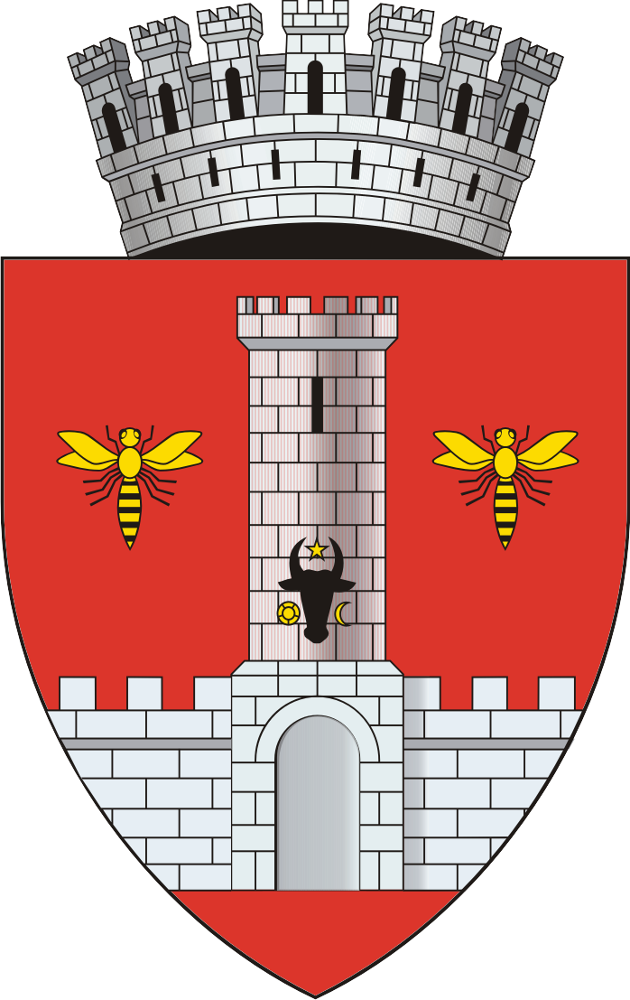
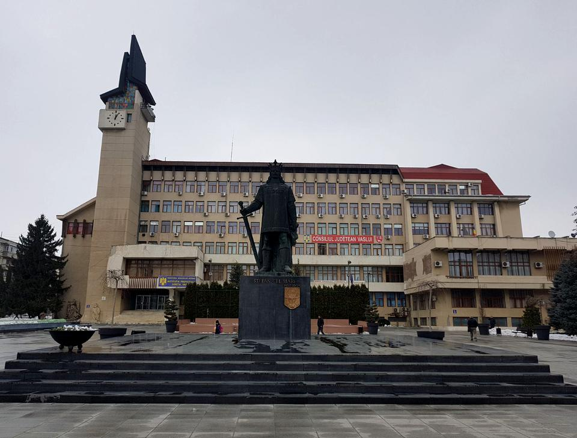

Vaslui este reședința si cel mai mare oraș al județului județului Vaslui, Moldova, România.
Este atestat documentar în anul 1375 iar potrivit recensământului din 2002, are o populație de 70.267 locuitori.
Este situat la 70 de km sud de municipiul Iași, la coordonatele 46°38′18″ latitudine nordică și 27°43′45″ longitudine estică.
Din teritoriul administrativ al municipiului fac parte și localitățile Moara Grecilor, Gura Bustei, Brodoc și Rediu.
Municipiul Vaslui este situat pe Valea Bârladului, în aria de confluență a râurilor Vasluieț și Racova, în zona de contact dintre
Colinele Tutovei și Podișul Central Moldovenesc.
A devenit reședință de județ după reforma teritorial-administrativă din 1968.

Noile prerogative administrative au contribuit la transformarea localităţii intr-un centru urban modern şi plin de vitalitate care, astăzi,
este preocupat de ridicarea standardului de viaţă al locuitorilor săi in consens cu dezideratele Uniunii Europene.
In speranţa că, odată ajunşi aici, veţi reuşi să descoperiţi nu numai locuri incantătoare, demne de vizitat, ci şi oameni minunaţi.

Statuia de bronz a lui Ştefan cel Mare (Centrul Civic - Vaslui)
Realizată din bronz, cu o înălţime de 5 m, statuia lui Ştefan cel Mare este operă a sculptorului ieşean Iftimie Bârleanu şi a fost dezvelită în anul 1972.
Pe soclul monumentului sunt montate stema Moldovei din vremea marelui domnitor (un cap de bour) şi un basorelief intitulat “Închinarea steagurilor”.
Pe această statuie se pot citi vorbele lui Nicolae Iorga despre Ştefan cel Mare: “Domn adevărat, viteaz, cuminte şi iubitor de ţară şi de neam din clipa întâia până în cea din urmă...
Într-însul găsise poporul românesc cea mai deplină şi cea mai curată icoană a sufletului său.”
Lipite de faţada Prefecturii, sunt trei grupuri statuare, cioplite în piatră, ale aceluiaşi autor, înfăţişând supunerea turcilor sub spada oştenilor moldoveni.